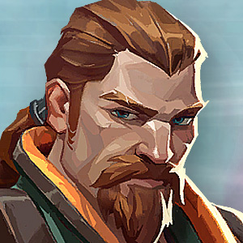

Breach

- Clase: Iniciador.
- Nacionalidad: Suecia.
Las habilidades especiales de Breach son las siguientes.
Habilidad Q de Breach
Habilidad Q: Explosión cegadora
Tipo: básica.
Coste: 250 créditos.
Función: te equipas con una carga explosiva cegadora que puedes disparar para liberar una rápida explosión que atraviesa paredes. La carga ciega a todos los jugadores que la estén mirando.
Habilidad E de Breach
Habilidad E: Falla
Tipo: firma.
Coste: gratuita.
Función: te equipas con una bomba sísmica que puedes disparar para liberar un seísmo que aturde a todos los enemigos dentro de la zona de efecto.
Habilidad C de Breach
Habilidad C: Réplica
Tipo: básica.
Coste: 200 créditos.
Función: te equipas con una carga explosiva de fusión. Al dispararla puede atravesar paredes tras un pequeño retardo y su explosión inflige gran daño a cualquiera que esté dentro de su área de efecto.
Habilidad X de Breach
Habilidad X: Fragor imparable
Tipo: definitiva.
Coste: 7 puntos de definitiva.
Función: te equipas con una carga explosiva sísmica que puedes disparar para crear un seísmo que se extiende por una gran zona en forma de cono. Este seísmo aturde y lanza por los aires a los enemigos.
Killjoy
- Clase: Centinela.
- Nacionalidad: Alemania.
Las habilidades especiales de Killjoy son las siguientes.
Habilidad Q de Killjoy
Habilidad Q: Bot de alarma
Tipo: básica.
Coste: 200 créditos.
Función: equipas un bot de alarma camuflado que puedes desplegar para dar caza a los enemigos dentro de su alcance. Cuando alcanza a su objetivo, el bot explota haciendo daño y aplicando vulnerabilidad.
Habilidad E de Killjoy
Habilidad E: Torreta
Tipo: firma.
Coste: gratuita.
Función: equipas una torreta que se despliega en una zona para disparar a todo enemigo que encuentre en un cono de 180 grados.
Habilidad C de Killjoy
Habilidad C: Nanoenjambre
Tipo: básica.
Coste: 200 créditos.
Función: disparas granadas de nanoenjambre que se camuflan y que puedes activar de forma remota para desplegar un enjambre.
Habilidad X de Killjoy
Habilidad X: Bloqueo
Tipo: definitiva.
Coste: 7 puntos de definitiva.
Función: disparas un dispositivo de bloqueo que detiene a todos los enemigos que estén dentro de su radio de efecto. Los enemigos pueden destruir este dispositivo.
Cypher
- Clase: Centinela.
- Nacionalidad: Marruecos.
Las habilidades especiales de Cypher son las siguientes.
Habilidad Q de Cypher
Habilidad Q: Prisión cibernética
Tipo: básica.
Coste: 100 créditos.
Función: lanzas de inmediato una prisión cibernética. Esta prisión puede activarse a distancia, apuntando sobre ella, y al hacerlo se creará una zona que bloquea la visión de los enemigos si quieren atravesarla.
Habilidad E de Cypher
Habilidad E: Cámara espía
Tipo: firma.
Coste: gratuita.
Función: te equipas con una cámara espía que puedes disparar para fijar en una ubicación. Una vez hecho eso puedes controlar la visión de la cámara (dejando expuesto a Cypher, así que cuidado) para ver lo mismo que ella ve, e incluso puedes disparar un dardo marcador que revelará la posición del enemigo al que alcance.
Habilidad C de Cypher
Habilidad C: Cable trampa
Tipo: básica.
Coste: 200 créditos.
Función: te equipas con un cable trampa, destructible pero oculto. Puedes dispararlo hacia una pared y este se extenderá hacia la pared del lado opuesto, y también puedes recogerlo para moverlo hacia otra posición. Los jugadores enemigos que atraviesen el cable se quedarán anclados y su posición se revelará, si no logran dispararle a tiempo para librarse acabarán finalmente aturdidos.
Habilidad X de Cypher
Habilidad X: Hurto neuronal
Tipo: definitiva.
Coste: 7 puntos de definitiva.
Función: puedes apuntar sobre un enemigo muerto con tu mira y usar esta habilidad al instante para revelar la posición de todos los enemigos vivos restantes. Especialmente útil cuando solo quedan unos pocos oponentes o no sabes dónde se esconden.
Phoenix
- Clase: Duelista.
- Nacionalidad: Reino Unido.
Las habilidades especiales de Phoenix son las siguientes.
Habilidad Q de Phoenix
Habilidad Q: Bola curva
Tipo: básica.
Coste: 250 créditos.
Función: te equipas con un orbe fulgurante que puedes disparar a izquierda o derecha, explota poco después de lanzarlo y nubla la vista de cualquiera que lo vea.
Habilidad E de Phoenix
Habilidad E: Combustión
Tipo: firma.
Coste: gratuita.
Función: te equipas con una bola de fuego que puedes lanzar para que explote al hacer contacto con una superficie, generando una zona de fuego persistente.
Habilidad C de Phoenix
Habilidad C: Llamarada
Tipo: básica.
Coste: 200 créditos.
Función: te equipas con una pared de llamas. Puede dispararse para crear una línea de llamas hacia delante que bloquea la visión y quema a los enemigos que la toquen.
Habilidad X de Phoenix
Habilidad X: Cenizas
Tipo: definitiva.
Coste: 6 puntos de definitiva.
Función: colocas al instante un marcador en la posición actual de Phoenix. Mientras está activa, si te matan (o cuando se agota el tiempo) volverás de inmediato a la ubicación del marcador con toda tu vida al completo y las armas recargadas.
Brimstone
- Clase: Controlador.
- Nacionalidad: EE.UU.
Las habilidades especiales de Brimstone son las siguientes.
Habilidad Q de Brimstone
Habilidad Q: Incendiario
Tipo: básica.
Coste: 250 créditos.
Función: te equipas con un lanzagranadas incendiarias. Con este arma puedes disparar una granada que explota en cuanto toca el suelo generando una zona de fuego persistente que daña a los jugadores que estén en el interior.
Habilidad E de Brimstone
Habilidad E: Cortina de humo
Tipo: firma.
Coste: 100 créditos.
Función: te equipas con un mapa táctico de la zona. Puedes marcar una ubicación del mapa y luego confirmar el disparo para que caiga en dicho lugar una nube de humo de larga duración que bloquea la visión de los jugadores que estén dentro de ella. También es útil para impedir que los jugadores te vean si la colocas estatégicamente en huecos de puertas o pasillos estrechos.
Habilidad C de Brimstone
Habilidad C: Baliza estimulante
Tipo: básica.
Coste: 100 créditos.
Función: te equipas con una baliza estimulante que puedes lanzar hacia el frente. Al tocar el suelo la baliza se desplega creando un área o campo que otorga disparo rápido a todos los jugadores que estén dentro de ella.
Habilidad X de Brimstone
Habilidad X: Golpe orbital
Tipo: definitiva.
Coste: 6 puntos de definitiva.
Función: te equipas con un mapa táctico de la zona y gracias a este puedes señalar una ubicación para disparar un potente golpe orbital de láser. Provoca un gran daño prolongado a los enemigos que se encuentren en la zona afectada.
Omen
- Clase: Controlador.
- Nacionalidad: Desconocida.
Las habilidades especiales de Omen son las siguientes.
Habilidad Q de Omen
Habilidad Q: Paranoia
Tipo: básica.
Coste: 300 créditos.
Función: disparar instantáneamente un proyectil sombrío hacia delante que reduce brevemente el alcance de la visión de todos los jugadores que toca y también los ensordece. Este proyectil además puede atravesar paredes.
Habilidad E de Omen
Habilidad E: Velo tenebroso
Tipo: firma.
Coste: gratuita.
Función: te equipas con un orbe sombrío y entras en un mundo paralelo para colocarlo y marcar su objetivo. Si lo disparas genera una esfera duradera que bloquea la visión.
Habilidad C de Omen
Habilidad C: Aparición tenebrosa
Tipo: básica.
Coste: 150 créditos.
Función: te equipas con una habilidad que te permite caminar entre las sombras. Al disparar entras en un breve periodo de canalización y después te teletransportas a la ubicación deseada, al hacerlo los enemigos no te verán pero podrán oír el sonido que generas desde la posición de salida.
Habilidad X de Omen
Habilidad X: Desde las sombras
Tipo: definitiva.
Coste: 7 puntos de definitiva.
Función: te equipas con un mapa táctico y puedes señalar una ubicación hacia la que quieres teletransportarte. Mientras lo haces Omen aparece como una sombra por el escenario y los enemigos pueden dispararte para cancelar la habilidad.
Jett
- Clase: Duelista.
- Nacionalidad: Corea.
Las habilidades especiales de Jett son las siguientes.
Habilidad Q de Jett
Habilidad Q: Vendaval
Tipo: básica.
Coste: 150 créditos.
Función: Jett se propulsa instantáneamente a mucha altura hacia arriba.
Habilidad E de Jett
Habilidad E: Viento de cola
Tipo: firma.
Coste: gratuita.
Función: Jett se propulsa de inmediato hacia la dirección en la que se esté moviendo, con mucha rapidez. Si está quieta, se propulsa hacia delante.
Habilidad C de Jett
Habilidad C: Borrasca
Tipo: básica.
Coste: 200 créditos.
Función: lanza un proyectil al instante que se expande en una nube al tocar una superficie, esto bloquea la visión brevemente de otros jugadores. Si se mantiene el botón de habilidad pulsado el humo se curvará en la dirección de la mira.
Habilidad X de Jett
Habilidad X: Tormenta de cuchillas
Tipo: definitiva.
Coste: 7 puntos de definitiva.
Función: te equipas con un conjunto de cuchillos volantes de alta precisión que se recargan cuando acabas con un oponente. Puedes disparar cuchillos de uno en uno o si alternas el modo de disparo puedes lanzar todas las dagas que tengas hacia tu enemigo.
Raze
- Clase: Duelista.
- Nacionalidad: Brasil.
Las habilidades especiales de Raze son las siguientes.
Habilidad Q de Raze
Habilidad Q: Fardo explosivo
Tipo: básica.
Coste: 200 créditos.
Función: lanzas un fardo explosivo que se adhiere a las superficies y que puedes activar después para hacer que explote y dañe y desplace a cualquier enemigo que alcance.
Habilidad E de Raze
Habilidad E: Balas de pintura
Tipo: firma.
Coste: gratuita.
Función: te equipas con una granada de racimo, puedes dispararla para que explote y se creen submuniciones que infligirán daño a los enemigos alcanzados dentro de su rango.
Habilidad C de Raze
Habilidad C: Bot explosivo
Tipo: básica.
Coste: 400 créditos.
Función: te equipas con un bot explosivo que puedes desplegar en línea recta hacia delante. El bot además rebota en las paredes y si se fija en un enemigo lo perseguirá hasta alcanzarlo y explotar para hacerle gran daño.
Habilidad X de Raze
Habilidad X: Cierra telones
Tipo: definitiva.
Coste: 8 puntos de definitiva.
Función: te equipas con un lanzacohetes que puedes disparar para generar un daño en área masivo cuando el cohete entre en contacto con cualquier cosa.
Reyna
- Clase: Duelista.
- Nacionalidad: México.
Las habilidades especiales de Reyna son las siguientes.
Habilidad Q de Reyna
Habilidad Q: Devorar
Tipo: básica.
Coste: 100 créditos.
Función: los enemigos asesinados por Reyna dejan orbes de alma que duran 3 segundos. Puedes devorar estos orbes para consumirlos al instante y recuperar vida (al obtener 100 puntos de vida con esta habilidad la cantidad adicional decaerá).
Habilidad E de Reyna
Habilidad E: Despreciar
Tipo: firma.
Coste: gratuita.
Función: consumes instantáneamente un orbe de alma cercano y Reyna se vuelve intangible durante un breve periodo. Si la definitiva está activa, Despreciar te hace también invisible.
Habilidad C de Reyna
Habilidad C: Mirada lasciva
Tipo: básica.
Coste: 250 créditos.
Función: te equipas un ojo etéreo destructible. Puedes activarlo para lanzar el ojo hacia delante una corta distancia, limitando la visión de todos los enemigos que lo miren.
Habilidad X de Reyna
Habilidad X: Emperatriz
Tipo: definitiva.
Coste: 6 puntos de definitiva.
Función: entras en un frenesí que aumenta drásticamente la velocidad de disparo, de equipamiento y de recarga. Consigue cargas infinitas de habilidades de Cosecha de almas. Si consigues un asesinato se reinicia la duración.